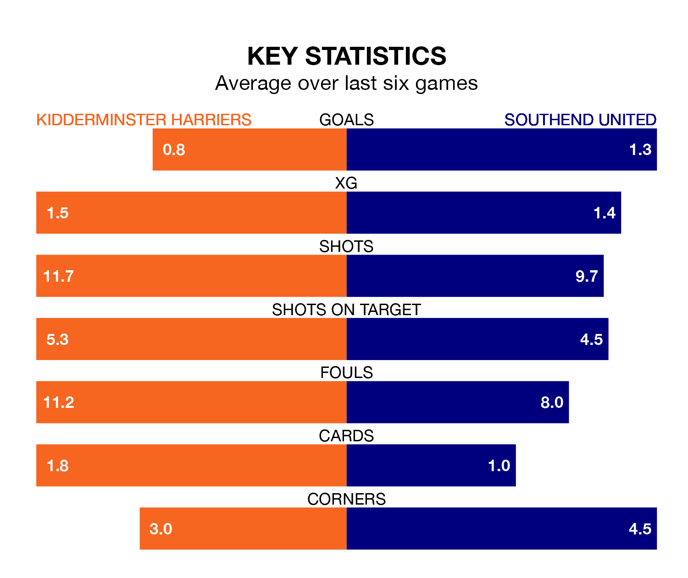

Kidderminster Harriers host Southend United on Saturday at the Aggborough Stadium in National League.
In their last league match, on December 16, Kidderminster Harriers lost to Maidenhead United 1-0 away.
Southend also lost, 2-1 at home against Bromley, with Brooklyn Kabongolo scoring their goals.
Kidderminster Harriers are 23rd in the table after 24 games, of which they have won four and drawn seven, earning 19 points.
Southend are 15 places ahead of Kiddy in eighth, with 10 wins and five draws putting them on 35 points.
In Christian Dibble, the hosts can rely on one of the league's safest pair of hands. He has kept seven clean sheets in his 24 appearances this season, and only one other 'keeper – Halifax Town's Samuel William Johnson – has been able to prevent the opposition scoring on more occasions in National League.
In United's net, Collin Andeng Ndi has three clean sheets in nine games. He has conceded a goal every 68 minutes, 10% more often than the 77 minutes between goals for Dibble.
With 17 goals in 24 games so far this season, Kidderminster Harriers are the league's lowest scorers with 0.7 goals per game. But they are conceding fewer than average too, letting in 30 goals at a rate of 1.2 per game.
The Shrimpers, meanwhile, are above average scorers, with 1.7 goals per game, compared to a league average of 1.5. They have conceded 1.1 goals per game.
Kidderminster Harriers are in disappointing form in National League, with one win and two draws from their last six games.
With two wins and two draws over that period, the away team's form is better – they have taken eight points from 18, compared to Kiddy's five.
Updated: 12:43, 20/12/23